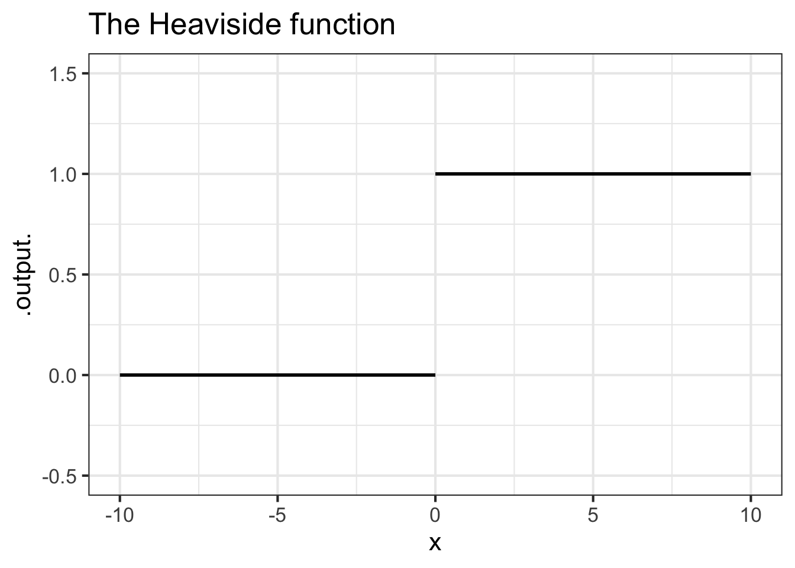
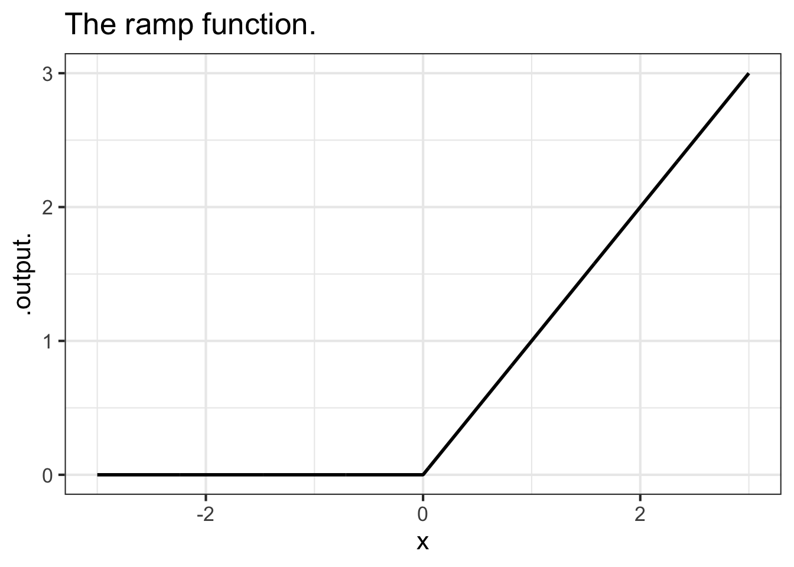
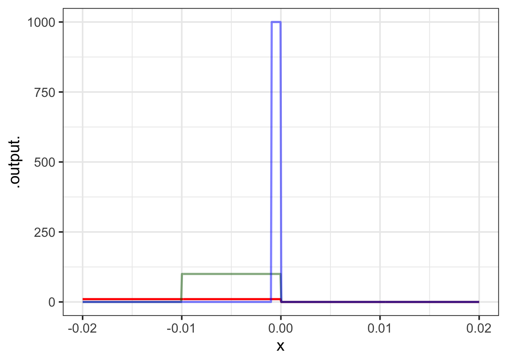
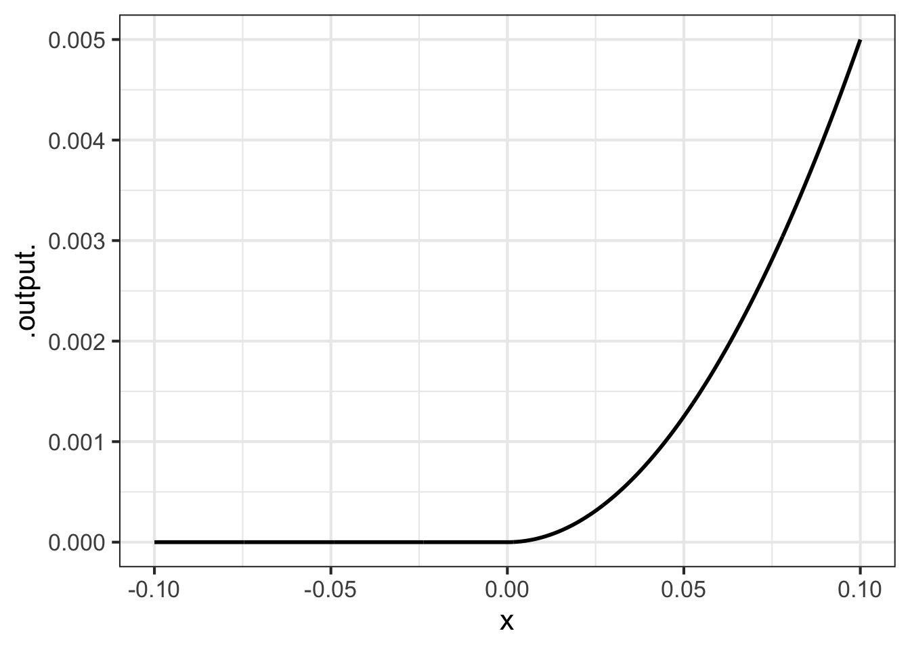

22 Continuity and smoothness
As introduced in Chapter 1, a space is a set of possibilities. For instance, for the function \(f()\), the input space—that is, the set of all possible inputs—is the domain of the function. We have focused on spaces that are sets of numbers, which we have denoted as, say, \(x \in [-3,3]\) in mathematical notation or domain(x = -3:3) in R/mosaic notation. Of course, when we write \(x \in [-3,3]\) or domain(x = -3:3) we mean the space of \(x\) is the set of all the numbers from -3 to 3.
You’ve been learning about sets since early in school. A child learning about numbers starts with the “counting numbers”: \(1, 2, 3, \ldots\). In primary school, the set of numbers is extended to include zero and the negative numbers: \(-1,-2,-3, \ldots\), giving a set called the “integers.” Counting numbers and integers are discrete sets. Between two consecutive members of the counting numbers or the integers, there is not another number of the set.
The next step in a child’s mathematical education is the “rational numbers,” that is, numbers that are written as a ratio: \(\frac{1}{2}, \frac{1}{3}, \frac{2}{3}, \ldots, \frac{22}{7}\), and so on. Rational numbers fit in the spaces between the integers. That is, between any two integers, even consecutive ones, there is a rational number. For instance, the rational number \(\frac{1}{2}\) falls between 0 and 1.
Between any two rational numbers, there is another rational number, indeed there is an infinite number of rational numbers. For instance, between \(\frac{1}{2}\) and \(\frac{2}{3}\) is \(\frac{6}{11}\) (and many others, such as \(\frac{7}{11}\) or \(\frac{13}{21}\)). It is useful to think of rational numbers as fitting in the spaces between integers.
If you didn’t stumble on the word “spaces” in the previous sentence, you are well on your way to understanding what is meant by “continuous.” For instance, between any two rational numbers there is another rational number. Think of rational numbers as stepping stones that provide a path from any number to any other number.
It is a deep question whether the rational numbers are a walkway instead of isolated stepping stones? A walkway is a structure on which you can move any amount, no matter how small, without risk of going off the structure. In contrast, a too-small move along a path of stepping stones will put you in the water.
A continuous set is like a walkway; however little you move from an element of the set you will still be on the set. The continuous set of numbers is often called the number line, although a more formal name is the real numbers. (“Real” is an unfortunate choice of words, but we are stuck with it.)
The underlying metaphor here is space. Between any two points in space, there is another point in space. We will be working with several different kinds of spaces, for instance:
- the number line: all the real numbers
- the positive numbers: the real numbers greater than zero
- the non-negative numbers: this is the tiniest little extension of the positive numbers adding zero to the set.
- a closed interval, such as the numbers between 5 and 10, which we will write like this: \(x \in [5, 10]\) where \(x\) is a name we are giving to the set. (Another way to write the space is the declarative statement \(5 \leq x \leq 10\).)
- the Cartesian plane: all pairs of real numbers such as \((5.62, -0.13)\). Other metaphors for this: the points on a piece of paper or a computer screen.
- three-dimensional coordinate spaces like our everyday three-dimensional world, generally written as a set of three real numbers such as \((-2.14, 6.87, 4.03)\).
- higher-dimensional spaces, but we won’t go there until the last parts of the book.
The specialty of calculus is describing relationships between continuous sets. Functions such as \(\sin()\) or \(\text{line}()\), which are typical of the functions we study in calculus, take numbers as input and produce a number as output. That is, the functions describe the relationship between an input space and an output space.
In this chapter, we will elaborate on continuity, one of the ideas introduced in Chapter 6, and use the concept of continuity to characterize functions in a new way: their smoothness.
22.1 Continuity
The intuition behind continuity is simple: If you can draw the graph of a function without lifting the pencil from the paper, the function is continuous.
Continuity can be an important attribute of a modeling function. Often, we expect that a small change in input produces a small change in output. For instance, if your income changes by one penny, you would expect your lifestyle not to change by much. If the temperature of an oven changes by 1 degree, you don’t expect the quality of the cake you are baking to change in any noticeable way.
All of our basic modeling functions are continuous over their entire input domain. (Exception: the domain of the function \(1/x\) is the whole number line, except 0, where the positive and negative branches fail to meet up.) To illustrate discontinuity we will consider piecewise functions, as introduced in Section 9.4. The Heaviside function, graphed in ?fig-heaviside2 is discontinuous.
Drawing the graph of the Heaviside function \(H(x)\) involves lifting the pencil at \(x=0\).
In contrast, the piecewise ramp function (Figure 22.3) is continuous; you don’t need to lift the pencil from the paper to draw the ramp function.

Imagine that you were constructing a model of plant growth as a function of the amount of water (in cc) provided each day. The plant needs about 20 cc of water to thrive. You use the Heaviside function for the model, say \(H(W-20)\), where an output of 1 means the plant thrives and a output 0 means the plant does not. The model implies that with 20.001 cc of water, the plant will thrive. But providing only 19.999 cc of water, the plant will die. In other words, a very small change in the input can lead to a large change in the output.
Common sense suggests that a change of 0.002 cc in the amount of water—a small fraction of a drop, 2 cubic millimeters of volume—is not going to lead to a qualitative change in output. So you might prefer to use a sigmoid function as your model rather than a Heaviside function.
On the other hand, sometimes a very small change in input does lead to a large change in output. For instance, a sensible model of the hardness of water as a function of temperature would include a discontinuity at \(32^\circ\)F, the temperature at which water turns to ice.
One of author Charles Dickens’s famous characters described the relationship between income, expenditure, and happiness this way:
“Annual income 20 pounds, annual expenditure 19 [pounds] 19 [shillings] and six [pence], result happiness. Annual income 20 pounds, annual expenditure 20 pounds ought and six, result misery.” — the character Wilkins Micawber in David Copperfield
Macawber referred to the common situation in pre-20th century England of putting debtors in prison, regardless of the size of their debt. Macawber’s statement suggests he would model happiness as a Heaviside function \(H(\text{income}- \text{expenditure})\).
Whenever the output of a function is a binary (yes-or-no) value, you can anticipate that a model will involve a discontinuous function.
22.2 Discontinuity
Recall the logical path that led us to the idea of the derivative of a function. We started with the differencing operator, which takes as input a function and a “small” value of \(h\): \[{\cal D}_x f(x) \equiv \frac{f(x+h) - f(x)}{h}\] Then, through algebraic manipulation and numerical experiments we found that, once \(h\) is small enough, the graph of the slope function \({\cal D}_x f(x)\) does not depend on \(h\). And so we defined a function \(\partial_x f(x)\) where \(h\) does not play a role, writing \(\lim_{h\rightarrow 0}\) to remember our care to never divide by zero. \[\partial_x f(x) \equiv \lim_{h\rightarrow 0} \frac{f(x+h) - f(x)}{h}\ .\] Conveniently, we found that the derivatives of the pattern-book functions can be written in terms of the pattern-book functions without making any reference to \(h\). For instance:
- \(\partial_x \ln(x) = 1/x\) No \(h\) appears.
- \(\partial_x e^x = e^x\) No \(h\) appears
- \(\partial_x x^p = p\, x^{p-1}\) No \(h\) appears.
- and so on.
With discontinuous functions, we have no such luck. Figure 22.4 shows what happens if we compute \({\cal D}_x H(x)\), the derivative of the Heaviside function, for smaller and smaller \(h\).
Code
H <- makeFun(ifelse(x >=0, 1, 0) ~ x)
DH01 <- makeFun((H(x + 0.1) - H(x))/0.1 ~ x)
DH001 <- makeFun((H(x + 0.01) - H(x))/0.01 ~ x)
DH0001 <- makeFun((H(x + 0.001) - H(x))/0.001 ~ x)
slice_plot(DH01(x) ~ x, bounds(x=-0.02:0.02),
npts=500, color="red", size=2) %>%
slice_plot(DH001(x) ~ x,
color="darkgreen", npts=500, size=3, alpha=0.5) %>%
slice_plot(DH0001(x) ~ x,
color="blue", npts=500, alpha=0.5, size=2) 
Differencing the Heaviside function produces very different functions depending on the value of \(h\). The bump near \(x=0\) gets taller and taller as \(h\) gets smaller. Mathematicians would describe this situation as \[\lim_{h\rightarrow0}{\cal D}_x H(x=0) \equiv \lim_{h\rightarrow 0} \frac{H(0+h) - H(0)}{h}\ \ \ \text{does not exist}.\] Of course, for any given value of \(h\), e.g. \(h=0.000001\), the function \({\cal D}_x H(x)\) has a definite shape. But that shape keeps changing as \(h \rightarrow 0\), so we cannot point to any specific shape as the “limit as \(h \rightarrow 0\).”
Since there is no convergence in the shape of \({\cal D}_x H(0)\) as \(h\) gets smaller, it is fair to say that the Heaviside function does not have a derivative at \(x=0\). But away from \(x=0\), the Heaviside function has a perfectly sensible derivative: \(\partial_x H(x) = 0\) for \(x\neq 0\). But there is no derivative at \(x=0\).
22.3 Smoothness
Smoothness is a different concept than continuity, although the two are related. Most simply, any discontinuous function is not smooth at any input where a discontinuity occurs. But even the continuous ramp function is not smooth at the start of the ramp. Intuitively, imagine you were sliding your hand along the ramp function. You would feel the crease at \(x=0\).
A function is not smooth if the derivative of that function is discontinuous. For instance, the derivative of the ramp function is the Heaviside function, so the ramp is not smooth at \(x=0\).
All of our basic modeling functions are smooth everywhere in their domain. In particular, the derivatives of the basic modeling functions are continuous, as are the second derivative, third derivative, and so on down the line. Such functions are called C-infinity, written \(C^\infty\). The superscript \(\infty\) means that every order of derivative is continuous.

You cannot tell from Figure 22.5 that the second derivative is discontinuous. But if you were in a plane flying along that trajectory, you would feel a jerk as you crossed \(x=0\).
Mathematicians quantify the “smoothness” of a function by looking at the function’s continuity and the continuity of its derivatives. Smoothness is assessed on a scale \(C^0, C^1, C^2, \ldots, C^\infty\).
- \(C^0\): the function \(f()\) is continuous. Intuitively, this means that the function’s graph can be drawn without lifting the pencil from the paper.
- \(C^1\): the function \(f()\) has a derivative over its entire domain and that derivative \(\partial_x f(x)\) is continuous. (See Figure 22.5 for an example.)
- \(C^2\): the function \(\partial_x f(x)\) has a derivative over its entire domain and that derivative is continuous. In other words, \(\partial_{xx} f(x)\) exists and is continuous.
- \(C^n\): Like \(C^2\), but we are talking about the \(n\)th-derivative of \(f(x)\) existing and being continuous.
- \(C^\infty\): Usually when we denote a sequence with an infinite number of terms, we write down something like \(C^0, C^1, C^2, \ldots\). It would be entirely valid to do this in talking about the \(C^n\) sequence. But many of the mathematical functions we work with are infinitely differentiable, that is \(C^\infty\).
Examples of \(C^\infty\) functions:
\(\sin(x)\): the derivatives are \(\partial_x \sin(x) = \cos(x)\), \(\partial_{xx} \sin(x) = -\sin(x)\), \(\partial_{xxx} \sin(x) =-\cos(x)\), \(\partial_{xxxx} \sin(x) =\sin(x)\), … You can keep going infinitely.
\(e^x\): the derivatives are \(\partial_x e^x = e^x\), \(\partial_{xx} e^x = e^x\), and so on.
\(x^2\): the derivatives are \(\partial_x x^2 = 2 x\), \(\partial_{xx} x^2 = 2\), \(\partial_{xxx} x^2 = 0\), … Higher order derivatives are all simply 0. Boring, but still existing.
Example of non-\(C^2\) functions: We see these often when we take two or more different \(C^\infty\) functions and split their domain, using one function for one subdomain and the other(s) for other subbounds(s).
- \(|x|\), the absolute value function. \(|x|\) is a pasting together of two \(C^\infty\) functions: \[|x| \equiv \left\{\begin{array}{rcl}+x & \text{for} & 0 \leq x\\-x&\text{for}& \text{otherwise}\end{array} \right.\ .\] The domain is split at \(x=0\).
22.4 Practical smoothness is different.
For engineering and design problems, smoothness means something substantially different than described by the mathematical concepts above. Chapter 49 introduces cubic splines which are continuous functions defined by a finite set of coordinate pairs: two variables of a data frame. Each line of the data frame specifies a “knot point.” The spline consists of ordinary cubic polynomials drawn piecewise between consecutive knot points. At a knot point, the cubics on either side have been arranged to have their first and second derivatives match. Thus, the first two derivatives are continuous. The function is at least \(C^2\). The second derivative of a cubic is a straight-line function, so the second derivative of a cubic spline is a series of straight-line functions connected at the knot points. The second derivative does not itself have a derivative at the knot points. So, a cubic spline cannot satisfy the requirements for \(C^3\); it is \(C^2\).